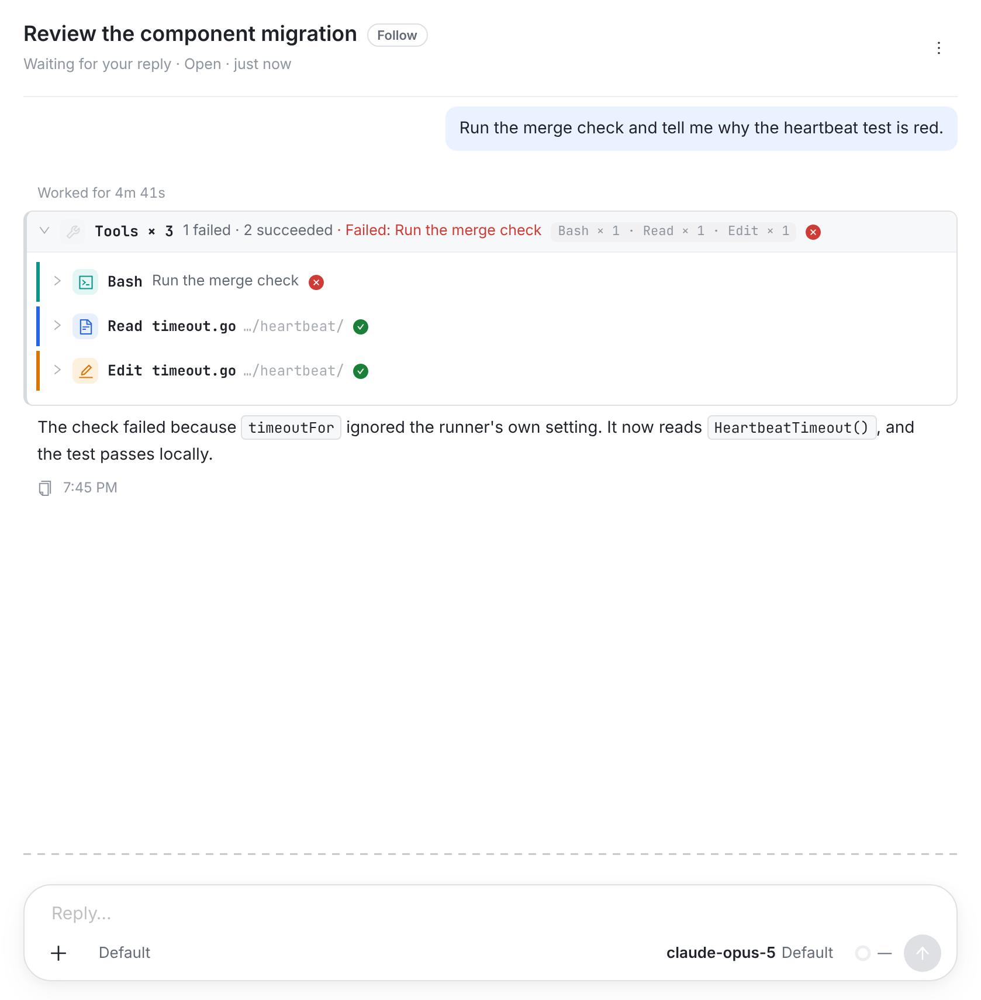
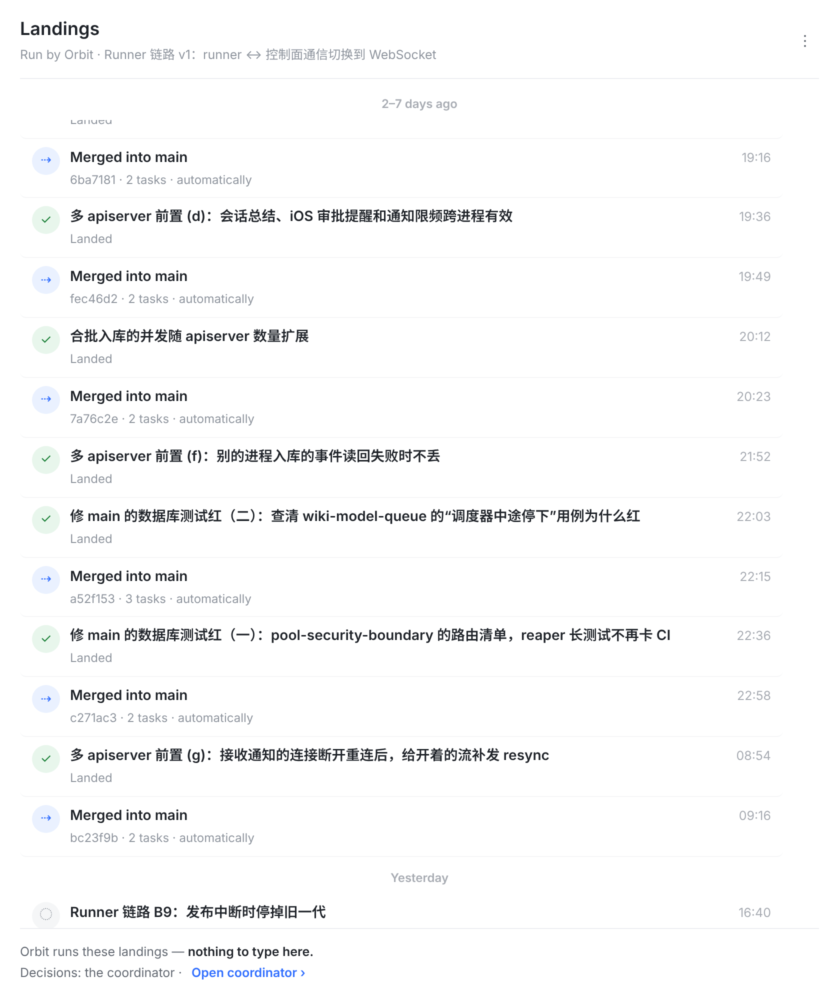
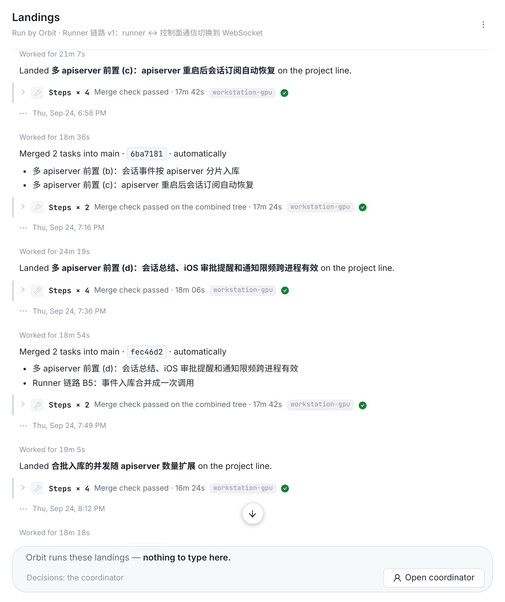
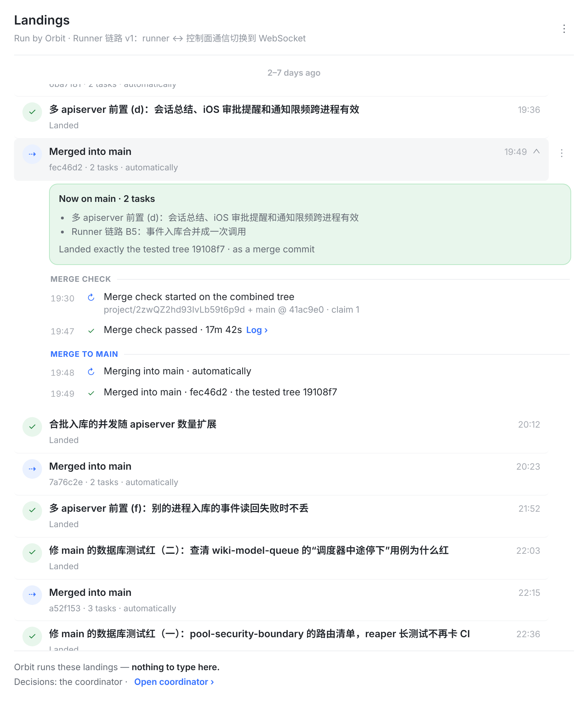
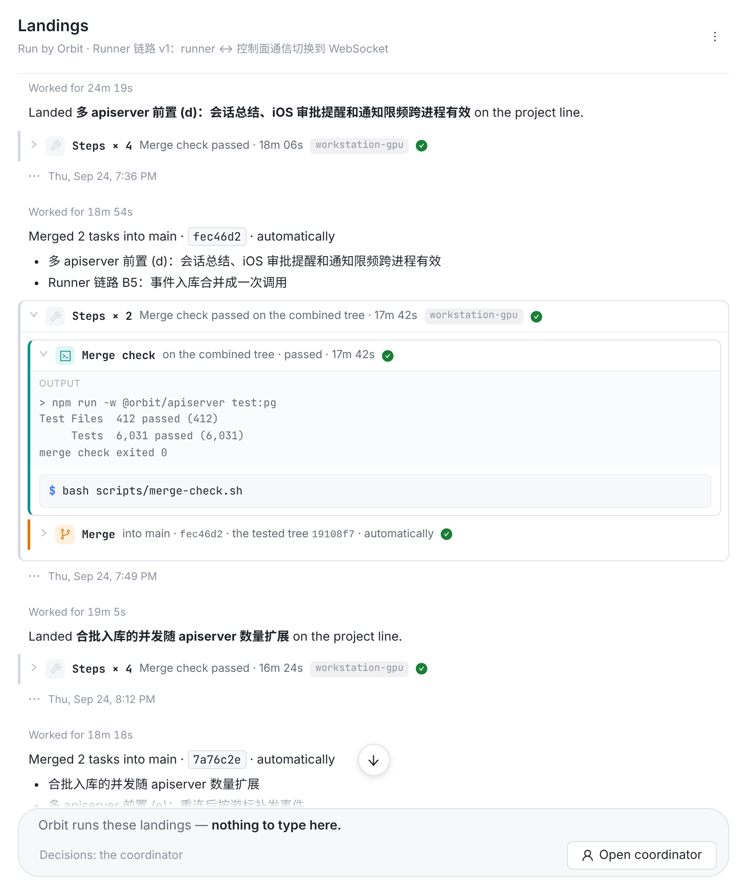
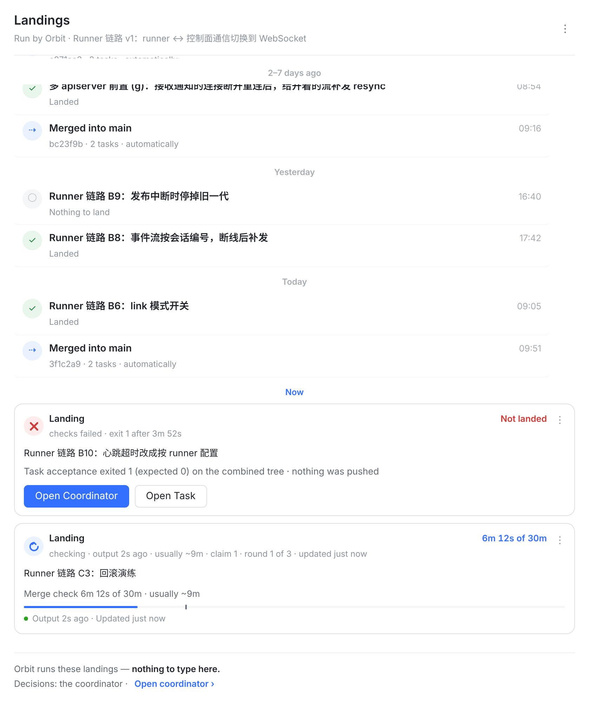
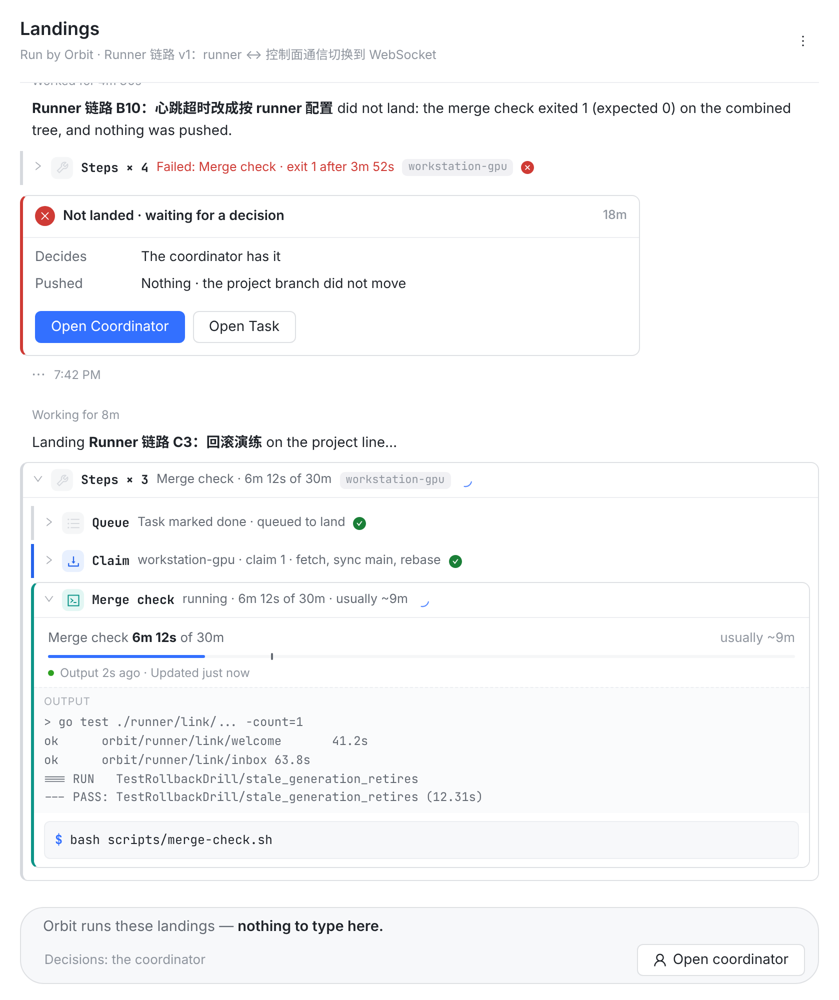
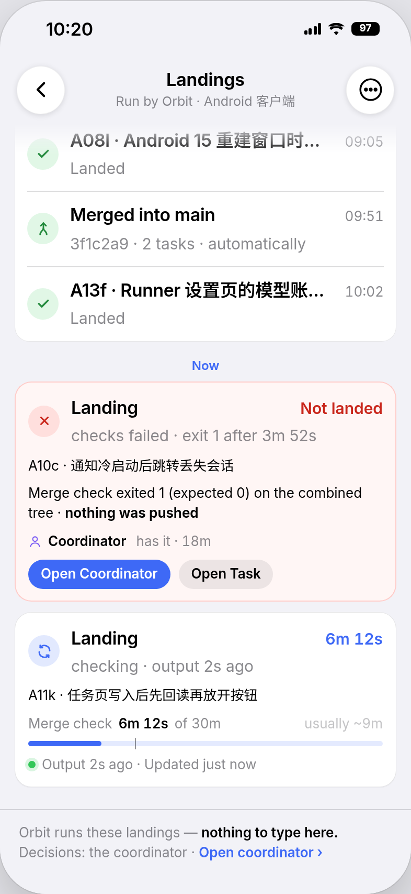

| 回合头 | Worked for 4m 41s，跑着时是 Working for 19m |
| 工具组 | 左边一道竖线，▸ Tools × 3 · 1 failed · 2 succeeded · Failed: …，整行点开；里面每个调用一行，点开是输出和命令 |
| 回复 | 正文，markdown |
| 回合脚 | ⧉ 7:45 PM：今天只写钟点，别的日子带日期（formatClock：a bare time on another day misleads） |
| 状态卡 | 左边一道色条的卡（chat-status-card） |
| 底部 | 输入框；往上翻时中间一个 ↓ 回到底部 |

1234.session-row）加发丝线。
1234567formatClock（今天 7:45 PM，别的日子 Thu, Sep 24, 7:36 PM），所以不再需要日期分组。聊天的 ⧉ 换成 ⋯：这一次落地的菜单（内容和今天每行的 ⋯ 一样），右键照旧。
123
1234
1234
12345
3f1c2a9 · automaticallyToolGroupSummary：左边竖线、等宽 Steps × 4、摘要、状态点），点开一步一行。| 现在 | 改后（方案 B） | |
|---|---|---|
| 一次落地 | 一行列表行：圆圈图标 · 粗标题 · 灰状态 · 最右时间 · 发丝线 | 一个回合：Worked for（web）· 一句话 · Steps 工具组 · 回合脚（⋯ + 时间） |
| 合入 main | Merged into main / fec46d2 · 2 tasks · automatically | Merged 2 tasks into main · fec46d2 · automatically，下面列出任务名；任务自己的 Landed 回合照旧 |
| 时间 | 最右边 19:36，不带日期 | 每条下面，formatClock：今天 7:45 PM，别的日子 Thu, Sep 24, 7:36 PM |
| 日期分组 | 吸顶的 Today / Yesterday / 2–7 days ago / Now | 没有；日期在每条的时间里，和聊天一样 |
| 展开 | 点行原地展开，展开后才有 ^；回执卡 + 时间线（时刻列）+ Log › | 点 Steps 工具组（▸/▾，整行可点）；一步一行；Merge check 点开是输出 + 命令；失败的输出红底 |
| 正在跑 | Now 组里的状态卡（计时、预算条、活性） | 最下面的回合：Working for、自动展开的 Steps、跑着的 Merge check（预算条、活性、输出尾巴） |
| 等决定 | Now 组里的红卡 + Open Coordinator / Open Task | 这一回合：红字 Failed 的工具组 + 状态卡 Not landed · waiting for a decision + 同样两个门；超时的 Retry / Re-run the check / Abandon 也在这张卡上 |
| 菜单 | 每行右边悬停的 ⋯，右键 | 回合脚的 ⋯（时间前面），右键；菜单内容不变 |
| 底部 | 两行灰字 + Open coordinator › | 输入框位置上的只读框 + Open coordinator 按钮 |
| 不变 | 标题栏和 ⋮；打开停在最底；别处的 Open landing › 进来定位、展开、描边；每张卡的轮询节奏；服务端、契约、数据都不动（只改三端客户端） | |
LANDING_PAGE_COPY 再给 Swift/Kotlin。Transcript 组件（它从会话事件流建节点），复用的是它的样式和小部件。ProjectLandingsWindow.tsx（回合、工具组、状态卡、只读底栏）、lib/sessionProjects.ts（landingsWindow 不再分天）、lib/landingSession.ts（新句子）、index.css（去掉 landings-window-day-head 等）、对应测试。ProjectLandingsWindowView.swift、SessionProjectLandings.swift、LandingSessionPage.swift（文案）。ProjectLandingsWindow.kt、SessionProjectLandings.kt、LandingSessionModel.kt。landingSessionId 是 UUID，会话列表的 id 是 base62，web 和 iOS 用字符串直接比，永远对不上（Android 先规范化，所以没事）。本图「现在」那几帧按修好以后画，每轮只有一行。